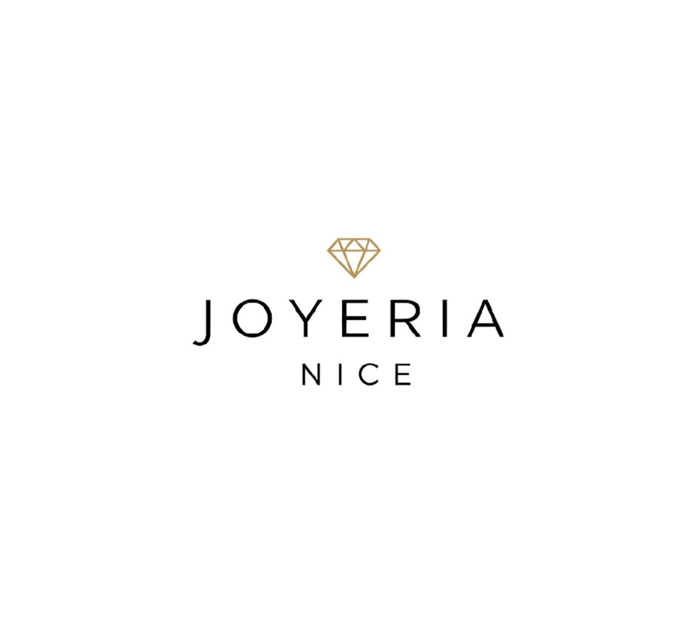

NOSOTROS JOYERÍA NICE
NOSOTROS

HISTORIA
Fue fundada en 1996 por Salvador Litchi, quien continuó el legado de su padre, Don Mateo Litchi, en el negocio de la joyería .
MISIÓN
Tiene como misión seguir siendo líderes en la industria, ofreciendo productos de alta calidad que llenen de belleza y significado la vida de sus clientes y emprendedores. También se enfoca en brindar una oportunidad de negocio a personas con grandes sueños y determinación a transformar su estilo de vida a través de la venta de joyería y accesorios.
VISIÓN
Busca ser un motor de cambio y crecimiento para miles de personas que han encontrado en la empresa una oportunidad para transformar sus vidas. También se enfoca en expandir su negocio a nuevas fronteras, llevando su misión y valores a nuevos mercados